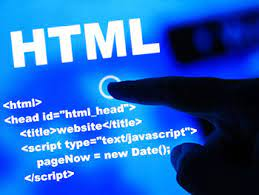

Proposito del Sitio
Dar una breve descripción de los conceptos de fundamentos de CSS y Frameworks CSS
HTML Lenguaje de Hipertexto

HTML (Lenguaje de Marcas de Hipertexto, del inglés HyperText Markup Language) es el
componente más básico de la Web. Define el significado y la estructura del contenido web.
Además de HTML, generalmente se utilizan otras tecnologías para describir la
apariencia/presentación de una página web (CSS) o la funcionalidad/comportamiento
(JavaScript).
"Hipertexto" hace referencia a los enlaces que conectan páginas web entre sí, ya sea dentro
de un único sitio web o entre sitios web. Los enlaces son un aspecto fundamental de la Web.
Al subir contenido a Internet y vincularlo a las páginas creadas por otras personas, te
conviertes en un participante activo en la «World Wide Web» (Red Informática Mundial).
CSS Básico

CSS (Hojas de Estilo en Cascada) es el código que usas para dar estilo a tu página web. CSS
Básico te lleva a través de lo que tú necesitas para empezar. Contestará a preguntas del
tipo: ¿Cómo hago mi texto rojo o negro? ¿Cómo hago que mi contenido se muestre en tal y tal
lugar de la pantalla? ¿Cómo decoro mi página web con imágenes de fondo y colores?
Entonces ¿qué es CSS, realmente?
Como HTML, CSS (Cascading Style Sheets) u Hojas de estilo en cascada en español, no es
realmente un lenguaje de programación, tampoco es un lenguaje de marcado. Es un lenguaje de
hojas de estilo, es decir, te permite aplicar estilos de manera selectiva a elementos en
documentos HTML.